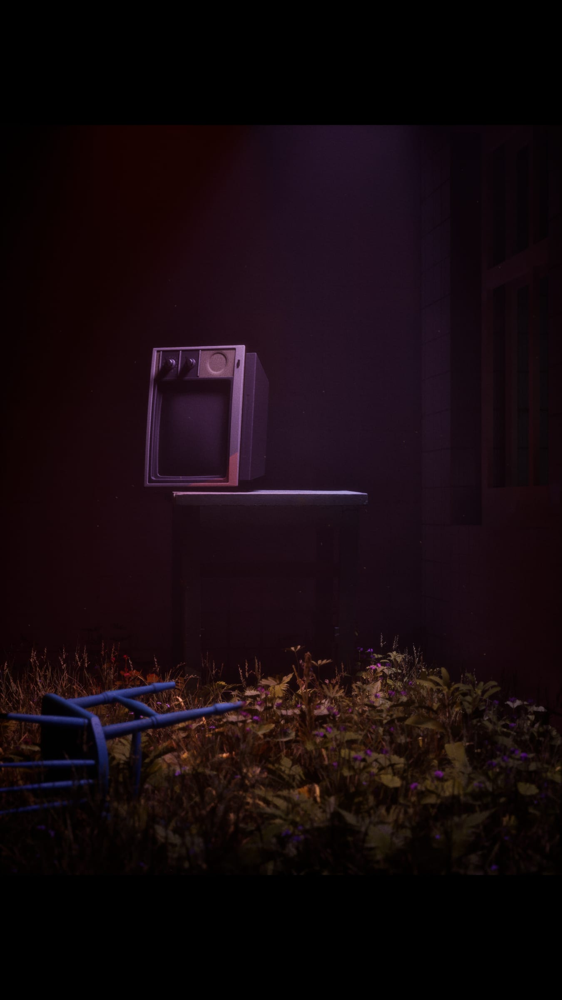
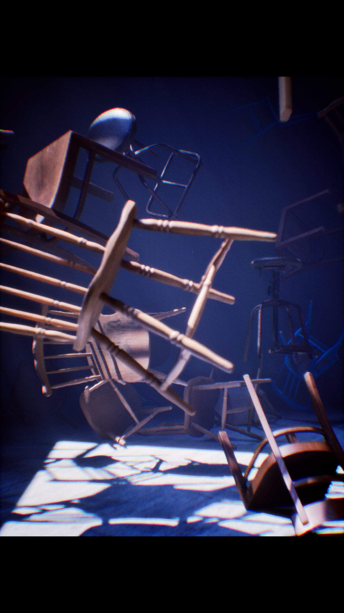
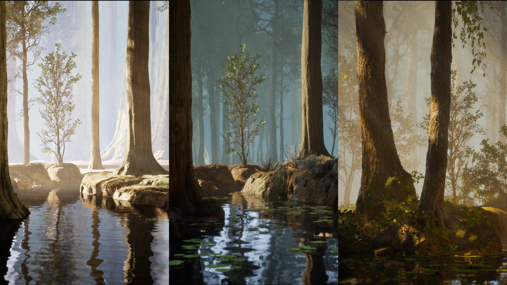
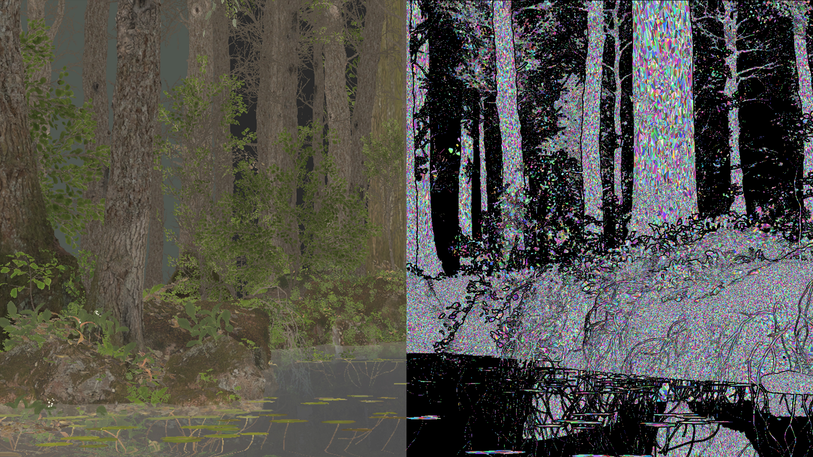
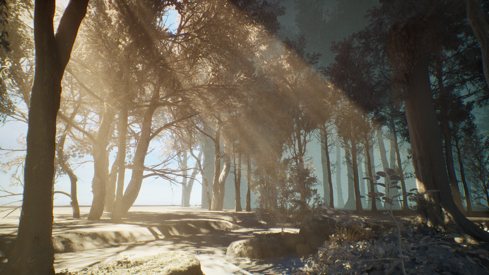

Works
01
Light Archive
- 01.1 Installation
- 01.2 Exhibition
- 01.3 Interactive
2025
Premiere, TouchDesigner
02
50/50 VISION
- 02.1 Video
2024
Arduino, Unity


03
Aspect Ratio
- 03.1 Installation
- 03.2 Interactive
2024
Arduino, Unreal Engine, sensors

04
At the moment
- 04.1 Interactive
2024
Unity, projection


05
Aura of Heart
- 05.1 Video
2024
Arduino, real-time graphics


06
Dear Actor
- 06.1 Interactive
2024
Max/MSP, TouchDesigner


07
Inside the Summer
- 07.1 Video
2024
Unity, video scheduling


08
Motion Blur
- 08.1 Video
2024
TouchDesigner, Unity
09
Scatty Dragger
- 09.1 Interactive
2024
Arduino, DMX



10
The Focus of Sunset
- 10.1 Video
2024
Arduino, Max/MSP


11
The Forest
- 11.1 Video
2024
Processing, Python
12
The Piano Room
- 12.1 Interactive
2024
Unreal Engine, OSC, TouchOSC


13
Volcandy
- 13.1 Interactive
2024
Unreal Engine, TouchDesigner


14
CAFE DIOR SEONGSU
- 14.1 Interactive
2022
Arduino, TouchDesigner


15
Fractal Memory
- 15.1 Video
2022
TouchDesigner, MadMapper


16
Gravity Well
- 16.1 Installation
- 16.2 Interactive
2022
Unreal Engine, ZigSim
17
Current
- 17.1 Interactive
2021
Arduino, serial communication


18
Prism Field
- 18.1 Video
- 18.2 Performance
- 18.3 Interactive
2021
TouchDesigner, DMX
19
The Forest
- 19.1 Installation
- 19.2 Interactive
- 19.3 Projection
2021
TouchDesigner, Kinect



20
Ghost Frequency
- 20.1 Interactive
2020
ESP32, TouchOSC
21
Code Landscape
- 21.1 Interactive
2018
Processing, OpenFrameworks
22
Mirror Phase
- 22.1 Interactive
2018
Kinect, TouchDesigner
23
Void Echo
- 23.1 Interactive
2018
Unreal Engine, Leap Motion
No work matches these filters.